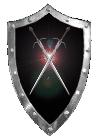

| Übersicht,
Vorschläge |
|
System/Engine/Technisches - Seefahrt
|
| Eran von Aibheisgârd (RIP) |
So ist es momentan:
Unsereins, also wir Seefahrer, schippern munter und vergnügt durch die Gegend. Unser Kurs ist immer exakt der, den wir klickenderweise einschlagen. Schön und gut, aber auf Dauer auch recht langweilig.
So soll es werden:
Es sollte des öfteren vorkommen daß das Schiffchen etwas vom Kurs abkommt, wegen Winden, Strömungen und und und...
Ein zufällig auftretendes Popup-Fensterchen, das uns Seefahrer darauf hinweist das wir z.B. nicht den eingeschlagenen Kurs gen Norden halten konnten, sondern bei schnelle Fahrt die letzten 10 Felder nach Nord-Osten oder Nord-Westen abgedriftet sind. Nichts weltbewegendes, sondern lediglich ne 45°-Abweichung auf unserer schönen Windrose.
Vorteile für das Spiel:
Die Seefahrt würde interessanter werden, da jede größere Fahrt, die die Reichweite eines Schiffes bis ans Maximale ausreizt, ein gewisses unabwägbares Risiko beinhalten würde. Es würde öftermals zu kleinen Miseren kommen, die für Abwechslung sorgen und obendrein die Interaktion zwischen den Spielern fördert.
Nachteile für das Spiel:
Landrattige Seefahrer würde bisweilen das ein oder andere Schiffchen verlieren.
*g
Mögliche Problematiken:
*texteingibumanschlageinfügenzukönnen*
Sonstiges:
*texteingibumanschlageinfügenzukönnen* |
03.03.07 7:50

|
|
| Yedlik san Dale (RIP) |
Konsequenz wäre, dass man bei kritischen Fahrten nicht mehr schnelle Fahrt macht?
Über die Zufallsquests wäre so etwas schwer zu lösen, da es keinen relativen Teleport gibt. Ein Einbau wäre aufwendig, da man dann prüfen muss ob das Ziel immer noch am Meer liegt. |
03.03.07 8:21
|
|
| Negus (RIP) |
So ein Zufallsquest gibt es doch schon und wieviele Schiffe willst du noch verlieren Eran? |
03.03.07 8:51
|
|
| Eran von Aibheisgârd (RIP) |
Das Zufallsquest ist langweilig weil man lediglich 1 Reichweite verliert.
;)
Die Konsequenz nicht mehr auf schnelle Fahrt zu fahren? Naja, ich bezweifel mal das irgendein Seefahrer das über länger so machen würde. Schon mal zum Spaß 1000x geklickt? *g
Es wäre sogar recht einfach einzubauen, da es nicht zwingend ein Quest sein muß. Es reicht ja voll und ganz aus das beim "klicken" auf die Windrose ne kleine Chance dazu führt das nicht in die gewünschte Richtung gefahren wird. Ob man dabei nun gegen Klippen kracht *grins* oder noch immer auf See ist spielt dabei doch eigentlich keine Rolle. |
03.03.07 8:58
|
|
| Claudius der Ältere (RIP) |
Stimmt eine der Zahlen müsste nur eine Abweichung aufweisen *grins*...böse Sache und ich hätte auch nix dagegen - würde es jedoch daran festmachen, das dies nur passierte wenn man keinen "echten" Seemann an Bord hat ^^
Ergo schippernde Heiler, Jäger etc. passiert sowas - einen rechten Seebären kann es nicht schocken ^^ |
03.03.07 9:10
|
|
| Nalon din Adun (RIP) |
Ich würde einiges darauf wetten, dass Eran nur eine bessere Ausrede, als seinen Suff sucht ;) |
03.03.07 11:39
|
|
| Sâlía Séregon (RIP) |
ich würde vermuten, dass er einfach nicht mehr der einzige sein will, der so viele schiffe versenkt ^^ |
03.03.07 13:02
|
|
| Eran von Aibheisgârd (RIP) |
Ihr lässt die nötige Ernsthaftigkeit, die mein im äußersten Maße gewichtiger Anschlag zweifelsohne verdient hätte, missen!
*g |
03.03.07 14:48
|
|
| Dagorineth (RIP) |
Also ich finde den Vorschlag wirklich gut, würde die Seefahrt enginetechnisch interessanter gestalten.
Bin dafür, auch wenn ich ebenfalls zu der Vermutung neige, dass Eran ne neue Ausrede braucht für die vielen Schiffe, die seinetwegen schon den Meeresgrund bevölkern *fg* |
03.03.07 16:07
|
|
| Darius Chinsai (RIP) |
Ja und Eran von Aibheisgârd hätte endlich ne Entschuldigung warum er immer seine Schiffe auf den Meeresgrund laufen lässt.^^
Err ist der einzige den ich kennen der das Spiel Schiffe versenken Solo spielt.^^
|
04.03.07 0:33
|
|
| Raphael (RIP) |
Nunja...Ich hab das heute schon kurz mit Eran besprochen...
Aber tatsächlich ist der Vorschlag recht speziell, da er die ganze "Spannung" bei langen Reisen bloss vorgaukelt...
Als einfaches Beispiel könnte man einen beliebeigen Seefahrer nehmen, der nach Norden fährt. Wie es der Zufall will, gerät er nun 45° vom Kurs ab und fährt nach Nordosten. Was tut er nun? Er fährt mit schneller Fahrt einmal nach Nordwesten und weiter nach Norden. Damit hat er weder AP noch Reichweite verloren und kommt am Ziel an, als wäre nichts gewesen...
Da ich den Gedanken des "vom Kurs abkommen" aber sehr interessant finde, habe ich einen anderen Vorschlag:
Bei schneller Fahrt soll man eine "relativ grosse" Chance haben, ein wenig vom Kurs abzukommen. Wenn man schnell unterwegs ist, sollte es möglich sein, dass man auf einem zufälligen Feld im Umkreis von 3 Feldern des eigentlichen Zielfeldes landet. Der AP-Verbrauch und Reichweite sollten allerdings korrekt abgezogen werden. Wenn die schnelle Fahrt also 3 Felder zu kurz gerät, werden auch nur 7 Reichweite abgezogen und nicht 10, wenn man übers Ziel "hinaus schiesst" entsprechend mehr, ebenso der AP-Verbrauch.
Der Gedanke dabei ist, dass nichtmal der beste Kapitän zu der Zeit (Mittelalter bzw. sehr frühe Renaissance) fähig war, einen wie vom Lineal gezogenen Kurs zu fahren. Jeder musste dauernd leichte Korrekturen anbringen und konnte nicht einfach das Steuerrad blockieren und annehmen, am richtigen Ort anzukommen. Und so kommt mir die Seefahrt in SW hin und wieder vor.
Der Effekt wäre, dass man als Seefahrer ein wenig konzentrierter und wachsamer an die Arbeit gehen müsste, ohne allerdings durch gefährdete Reichweite das Schiff zu riskieren.
Denn damit kann es passieren, dass man beim passieren einer Insel gegen Land stösst oder bei der Schatzsuche nicht genau die gewünschten Koordinaten trifft.
Ich würde eine solche Weiterentwicklung sehr begrüssen.
Um den Gedanken weiter zu spinnen, hatte ich noch eine zweite Idee, die zu meiner ersten passen würde, aber ich befürchte, dass sich ein paar Leute daran stören würden...
Es geht dabei um das "gegen Land stossen" mit dem Schiff, dass bisher unbestraft blieb. Wenn man nun unter berücksichtigung der ersten Idee in schneller Fahrt eine Insel passiert kann es natürlich passieren, dass man durch die Ungenauigkeit gegen Land stösst. In diesem Fall, also dem, dass man in schneller Fahrt (nur so, nicht im "Handbetrieb") gegen Land fährt, was ja eigentlich einem "auf Grund laufen" gleich kommt, würden alle Chars auf dem Schiff (Kapitän, Passagiere, sowohl HC als auch NC) 10 LP verlieren und ein kleiner Teil der Ladung geht über Bord.
Dies könnte man sogar davon abhängig machen, mit wieviel "Restbewegung" man auf Land stösst. Als Beispiel könnte man 0.5% pro Restfeld heranziehen. Wenn man nun bei schneller Fahrt nach 5 Feldern auf Land stösst, würden 2.5% der Ladung hopps gehen, wenn man nach 9 Feldern auf Land trifft, sinds noch 0.5%. Ebenso bei den Chars...1 LP pro Restfeld dünkt mich ein guter Wert.
Das Ganze ist nun nicht als "Strafe" für die Seefahrer gedacht, denn immerhin bin ich selbst einer, aber ich finde, dass würd ihr den nötigen Pepp geben, weil man nun vorsichtiger sein müsste und vorher überlegen was man macht, weil man nun nicht mehr einfach in schneller Fahrt lospreschen kann und mehr oder weniger mit geschlossenen Augen am richtigen Fleck landet...
Ich hoffe, ich konnte meine Gedanken klar machen...Falls nicht, einfach fragen... |
04.03.07 1:17
|
|
Klaus Störtebeker
 |
Naja, aber dann nutzte man doch nur noch Routen, außer es ginge nicht anders. Ich denke, daß schon genügend Seefahrer auch ohne Zufallsereignis in die Irre navigierten & ihre Schiffe verloren *g*
Jedenfalls wäre ich nicht so arg begeistert, wenn man nur noch wie im Suff über die Meere torkelt ;) |
04.03.07 2:04
 |
|
| Lilokel ok Schnjokel (RIP) |
So ist es momentan:
Seefahrt ist langweilig.
So wird es durch diesen Vorschlag:
Seefahrt bleibt langweilig, wird nur anstrengender.
--------------------------
Momentan klickt man seine +-100 Klicks und ist ohne die Kartenguckzeit sehr schnell am Ziel und die "Langeweile" ist vorbei.
Die Vorschläge würde dazu führen, dass man nur mehr aufpassen muss. Man kann also nicht einfach entspannt die langweilige Seetour schnell hinter sich bringen, sondern muss praktisch nach jedem Klick gucken ob noch alles stimmt oder nervige Popup-Fenster wegklicken. Wie schon festgestellt würde eine 45° Abweichung nur innerhalb der letzten 20 Felder wirklich was bedeuten. Davor ist es nur nerviges Wegklicken und Kurskorrigieren - nicht wirklich spannender nur langsamer und damit anstrengender.
Auch die Änderung von Raphael sähe ähnlich aus, Seefahrt bleibt langweilig, wird nur viel anstrengender. Zumal ich bei diesem Vorschlag als erstes über die Karte zetern würde. Da gehört dann eine genaue Koordangabe mit Gitter sowie eine Vergrößerungsfunktion rein. Oder Raph, bist du scharf drauf zwischen 2 Anlegern auf Loh nur noch Einzelklicks zu verwenden, weil du nie ganz sicher sein kannst wo der Anleger oder die Küste nun genau ist. Und 0,5% (also ein Feld hin oder her) von einer popligen 1000er Tranfuhre sind auch 100k GS.
Ergo, Ihr wollt Spannung, arbeitet an Quests und klaut den armen Seefahrern (denen es wichtig ist) nicht ihre Zeit, weil sie nun mit unzureichendem Kartenmaterial auf Einzelklickfahrt fahren müssen ;D
Auf diese Weise den Spannungsfaktor der Seefahrt zu erhöhen halte ich schlicht für unnötig und störend.
Es gibt Zufallsquests, die sorgen für Spannung. Wenn man sich da vertut oder schlicht nicht mit vollen LP ins Quest fährt, ist ein Problem schnell bewerkstelligt. Also wenn man die Spannung der Seefahrt erhöhren will, einfach neue Quests vorschlagen. Dann hat amn die Spannung udn kann trotzdem ohne langwieriges und nerviges Kursaufpassen ans Ziel kommen.
Die Argumentation, dass die Seefahrer im Jura, Trias oder der Kreidezeit nicht geradeaus fahren konnten ist hier denke ich vollkommen irrelevant. Damals kostete ein Laib Brot auch nicht mehr als ein Goldbarren und man hat sich keine 50 Wurstbrote reingestopft um ein paar Bäume zu fällen oder Fliegen zu erschlagen.
RL-Argumentationen sind eher Schönheitsboni, haben also keinen Nutzen und sollten nicht berücksichtigt werden solange es um Funktion geht, können aber später an der Attraktivität im kleinen Rahmen feilen. |
04.03.07 3:14
|
|
| Alissa (RIP) |
Dagegen da auf meinen Strecken die mich schon meine ganze Tagesration an AP kosten die (Schiffs)Reichweite so ausgeknautscht ist das da "jede" Abweichung zu einer Versenkung führt.
Den Rekord mit 13 versenkten Moloch hält zwar immer noch Hauke bei uns aber mit 10 Molochs kann ich ebenfalls aufwarten.
Ich finde es keineswegs spannend oder interessant sondern gelinde gesagt zum kotzen wenn mir selber schon ein Navigationsfehler morgens kurz vor der Arbeit passiert da ich dann auf dem Meer stehe und zusehen muss das mich wer bis abends abholen kann um die Waren zu übernehmen und zu einem Hafen zu fahren. Danke darauf kann ich verzichten.
Solch ein Vorschlag kann nur von einem "Freizeitsegler" kommen der sich auf der Lagerinsel aufhält und Küstenschifffahrt betreibt ;o). Die Masse der Seefahrer muss jedoch deutlich längere Strecken bedienen vor allem je weiter man von der Lagerinsel weg wohnt.
Wenn ich mit jeder Tour einen versenkten Moloch kalkulieren muss wird es in Zukunft kaum noch Warentransporte geben 2MioGS müssen auch erstmal erwirtschaftet werden! |
04.03.07 11:52
|
|
| Raphael (RIP) |
*lol* Als Küstenschiffer hat mich jetzt noch keiner bezeichnet...Und falls du Eran meinst. Der ist auch keiner... |
04.03.07 12:59
|
|
| Sâlía Séregon (RIP) |
ne, eran ist nur unterseeboot-kapitän... |
04.03.07 13:05
|
|
| Eran von Aibheisgârd (RIP) |
Freizeitsegler? *argwöhnisch anguck*
Es muß sich um eine Verwechslung handeln. Kaum eine Beschreibung wäre unzutreffender für Raphael und meinereiner!
*g |
04.03.07 13:09
|
|
Kantar
 |
Boahr Eran wenn dir langweilig ist lies ein buch ... oder spiel nen anderes spiel..wie wärs mit schiffchen versenken.*d+r*.. löl ne mal im ernst
man könnte ja extra für die Extremseefahrer das so machen ,aber man sollte es einstellen können im menu wer sowas mag stells ein wer nicht mach den haken nicht , den man bei Optionen machen könnte damit wäre jedem geholfen dem super RPG spieler und dem "normalen" |
04.03.07 20:58
|
|
| Raphael (RIP) |
*lol* Ne Option?^^
Dann will ich aber auch auswählen können, dass meine Gebäude ohne Rohstoffe und Lux prodden können *ironie* |
04.03.07 21:37
|
|
| Frances el Ferror (RIP) |
Damit dürfte JEDE Fahrt von und zu unseren Inseln unter der Kategorie "ein gewisses unabwägbares Risiko beinhalten" fallen.
Bei Verdoppelung der Reichweiten und Halbierung der benötigten AP sicherlich ein annehmbarer Vorschlag.
Ich habe aber einen weitaus besseren falls Euch wirklich langweilig ist Eran+Raphael schlage ich vor wir lassen Aerlinn einfach auf eine Eisinsel beamen irgendwo auf Schneebergen z.B. sie dann dort ordentlich zu versorgen oder Euch vor Falster zu verstecken sollte Euch die nächsten Jahre dann auf Trab halten. |
04.03.07 22:34
|
|
| Nalon din Adun (RIP) |
Solange Seefahrer im Vergleich zu Jägern die schlechteren Seefahrer sind, lehne ich jede Verschlimmbesserung der Seefahrt um zweifelhafte Entschuldigungen zu haben oder nicht vorhandene Spannung zu erzeugen, entschieden ab.
Gibt deutlich wichtigere Baustellen für Seefahrer. |
05.03.07 8:37
|
|
Tilion
 |
Als Pumpenbesitzer ist Seefahrt für mich reine Routine, die ich schnellstmöglich hinter mich bringen will.
Zusätzliche Quests oder etwa Kursabweichungen würde ich nur als nervig empfinden aber nicht als Erhöhung des Spielspasses. |
05.03.07 10:34
|
|
Lascalan
 |
Mal ganz ehrlich:
Dann will ich aber auch einen Zufall dass ich nicht mehr dort ankomme wo ich hinlaufen möchte.
Immerhin kann wohl auch kaum einer über hunderte Felder komplett gerade laufen mit der klaren Orientierung wo welche Himmelsrichtung ist.
Entweder man machts konsequent oder man machts garnicht.
Ich wäre dann immernoch für letzteres, denn ich will auch dort ankommen wo ich hinklicke!
Nächste Schritte wären doch
- Gewisse Wahrscheinlichkeit sich in der falschen Handelsroute einzuschreiben
- Gewisse Wahrscheinlichkeit die falschen Waren zu kaufen/verkaufen
usw.
Irren ist schließlich auch in diesen Bereichen menschlich (respektive zwergisch usw. ;) ) - alles in allem braucht es aber meiner Ansicht nach feste Konstanten in einem Spiel und dass man dort auskommt wo man hinwill ist so eine. |
05.03.07 10:53
|
|
| Nherin von dem Glutwindclan (RIP) |
Und wir irren uns so schon häufig genug, dass wir nicht noch eine computererzwungene Verwirrung brauchen.
Den Seemann auf- anstatt abzuwerten, empfände auch ich nach mehr als 2 Jahren erforderlich, wo sich nun häufig genug gezeigt hat, dass der HC-Seemann schlechter ist als ein Nebenskill in Seefahrt bei einem Krieger oder gar den Jäger als Hauptseemann.
Der Heiler hat doch auch seine Aufwertung bekommen, indem er der einzige ist, der die ganze Gruppe heilen kann, da auch hier der Nebenskill bis dahin den HC-Heiler unbrauchbar gemacht hat.
Danach wäre es mal eine Überlegung Wert, ob denn nicht die anderen HC-Berufe - die nun wirklich total sinnlos sind - nicht ebenso einen kleinen Bonus bekommen? Aber das erst, wenn der Seemann geschafft ist. |
05.03.07 11:49
|
|
| Ibn de Witt (RIP) |
Netter Versuch das Thema auf die HC-Seemann Problematik zu lenken. Nur haetten diese von Eran beschrieben Auswirkungen sowohl auf den HC-Seemann als auch auf den seefahrenden Krieger Auswirkungen, von daher haben beide Themen nichts miteinander zu tun.
Allerdings find ich Erans Idee, aufgrund einiger oben genannten Punkte, auch nicht wirklich spannend. Seefahren ist nervig und wuerde durch die Kursabweichungen vermutlich nur noch nerviger werden. |
05.03.07 18:27
|
|
Tilion
|
Erschöpft hast du den letzten Teil deiner Strecke hinter dich gebracht als du feststellst, das der kleine Hafen in dem du anlegen wolltest nicht wie erwartet vor deinem Schiff sondern leicht östlich zu sehen ist. Du kontrollierst deine Karten und bemerkst, dass es sich an dieser Stelle um eine gute, aber auf näheren Blick hin erkennbare Fälschung handelt. Du änderst den Kurs und setzt die Segel auf den tatsächlichen Hafen.
???wat dat denn??? |
05.03.07 19:47
|
|
| Brendan (RIP) |
Ich wäre auch dafür, dass Seefahrer endlich einmal einen Bonus bekommen, ehe man über durchaus spannende und prickelnde Erschwernisse nachdenkt.
Wie wäre es mit Schiffstypen, die nur Seefahrer steuern können? |
06.03.07 10:32
|
|
| Raphael (RIP) |
Hmm...Wie wärs mit einem Schiff, dass der Besatzung auf See einen Kampfbonus verleiht?
Oder eines, das man selbst ausbauen kann...Also Laderaum, Geschwindigkeit, Reichweite, Grossausbau :)
Und entsprechend den Ausbauten würde die Skillanforderung in Seefahrt steigen (Gruppenskill für Schiffe, die mehr als Skill 105 bräuchten?^^) |
06.03.07 13:39
|
|
| Eran von Aibheisgârd (RIP) |
Die Überlegungen mit dem Gruppenskill sind eine interessante Sache. Immerhin hilft es niemandem wenn ein famoser Kapitän das Kommando hat, aber der Rest der Besatzung totale Pfeifen sind. Nen Kapitän kann eben auch nicht alles selbst machen. |
06.03.07 19:19
|
|
Kantar
|
sagtmal habt ihr da schon was gemacht oder wie?schaut hier:
Erschöpft hast du den letzten Teil deiner Strecke hinter dich gebracht als du feststellst, das der kleine Hafen in dem du anlegen wolltest nicht wie erwartet vor deinem Schiff sondern leicht östlich zu sehen ist. Du kontrollierst deine Karten und bemerkst, dass es sich an dieser Stelle um eine gute, aber auf näheren Blick hin erkennbare Fälschung handelt. Du änderst den Kurs und setzt die Segel auf den tatsächlichen Hafen.
|
06.03.07 20:38
|
|
| Lilokel ok Schnjokel (RIP) |
*g* schlappe 4 Beiträge hlher steht genau das gleiche Quest ;D und das gibts schon länger und hat nix mit dem Vorschlag zu tun.
Aber derartige Quests sind imho deutlich geeigneter den Spannungsfaktor zu erhöhen. Da kann ja auch mal was gutes bei rauskommen. |
06.03.07 20:46
|
|
Kantar
|
naja ich weis es nun *gg* 1-2 reichweite oder -1 |
06.03.07 20:49
|
|
| Smoin cónuî Amdîr (RIP) |
ich bin gegen eine Bevoruzugung des Charakters Seemann, da es ansich schon erlaubt seien sollte, seine Leute in der Hinsicht ebenso, wie es einige Leute mit Ausweichen und Magiern machen, frei zu skillen.
Allerdings wäre ich ebenfalls für eine Angleichung/Verbesserung des jetzigen Seemanns als Char, da er einem Jäger etc deutlich im Nachteil ist.
zu Erans Vorschlag: Finde ich zwar ansich klasse, muss aber als Bewertung Lilo zustimmen, es würde kaum etwas ausmachen und wäre einfach nur nervig... |
06.03.07 23:08
|
|
| Raphael (RIP) |
Naja...Wie ich dir gegenüber schon angedeutet habe, Lilo, werden diese Quests erst ein echter Faktor wenn man deren Wahrschienlichkeit um etwa das Fünf- bis Zehnfache erhöht... |
06.03.07 23:08
|
|
| Lilokel ok Schnjokel (RIP) |
Naja, eine Rolle spielen sie jetzt schon ;D eine kleine aber keine zu vernachlässigende ;D
Die Wahrscheinlichkeit auf das 5-10fache zu erhöhen fände ich super, hätte einen eigenen Vorschlag verdient. Das fördert den Spannungsfaktor nicht nur bei der Seefahrt (weiß nicht ob man die Wahrscheinlichkeiten für Wasser, Wiese, Wald usw. überhaupt einzeln beeinflussen kann).
Allerdings wäre die Vorraussetzung das erstmal die 5-10fache Maße an möglichen Quests bereitgestellt wird, denn immer in die gleichen zu tappen ist doof.
Wenn ich mal Zeit hab werd ich welche einschicken, aber je mehr Leute mitmachen, desto schneller lässt sich dieser Vorschlag realisieren ;D |
06.03.07 23:19
|
|
| Lilokel ok Schnjokel (RIP) |
Dabei fällt mir auf, die Auswirkung das Reichweite verschwunden geht gibt es bei den Quests gar nciht, das könnte man vielleicht hinzufügen, die werden ja eh alle geprüft bevor sie eingebaut werden... |
06.03.07 23:39
|
|
| Raphael (RIP) |
Es gibt eine, deren Auswirkung -1 Reichweite ist auch wenn ich die noch nie hatte... |
06.03.07 23:48
|
|
| Lilokel ok Schnjokel (RIP) |
Ja, das ist ja die oben ;D
die hatte ich auch schon ein paar mal, aber die wurde nicht einfach so eingereicht, zumindest gibt es die Auswirkung nicht in dem Forumlar (oder ich seh sie nicht). Sprich die stammt entweder von der Sl, oder wurde direkt an den Support ohne das Formular geschickt. |
06.03.07 23:55
|
|
| Nherin von dem Glutwindclan (RIP) |
Ihr braucht etwas, damit euch nicht langweilig wird? Dann tut euch zusammen und spielt das hochgepriesene RPG, das gerüchteweise existieren soll.
Verschont die anderen aber bitte mit diesen billigen Zufallsquests. |
07.03.07 9:00
|
|
Übersicht,
Vorschläge
|